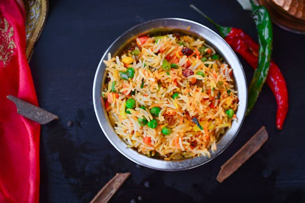
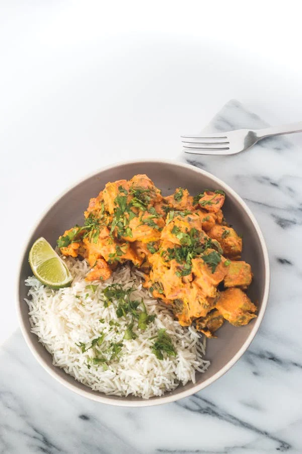
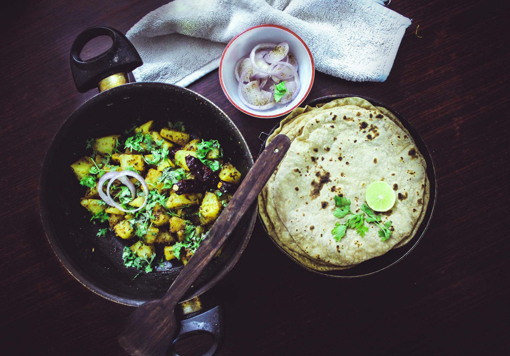

Vegetable Biryani:

Cooked basmati rice with a mix of vegetables (like carrots, peas, potatoes, beans, and cauliflower) along with a variety of spices.
Paneer Butter Masala served with Rice:

The dish features soft cubes of paneer (Indian cottage cheese) cooked in a velvety tomato-based gravy made with butter, cream, and a blend of spices like garam masala, cumin, coriander, and turmeric.
Palak Paneer served with Roti (3 pieces):

Dal Tadka served with Rice:

Indian dish where dal (lentils) are cooked with aromatic spices and then tempered (or "tadka") with ghee (clarified butter), mustard seeds, cumin seeds, garlic, ginger, and green chilies.
Schezwan Noodles:

Indo-Chinese dish made from stir-fried noodles that are coated in a bold and flavorful Schezwan sauce.